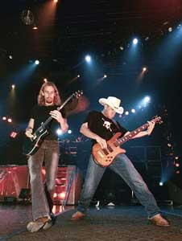

Биография группы Nickelback
Группа NICKELBACK появилась в 1996 году в небольшом канадском городке Ханна. Она была сформирована братьями Чадом (вокал, гитара) и Майком (бас) Крюгер, их кузеном Брэндоном (барабаны) и Райаном Пике (гитара). Однако Брэндон Крюгер вскоре покинул группу. Музыкантам пришлось искать ему замену. Прежде чем был найден Райан Викдэйл, в группе сменилось шесть барабанщиков.
Довольно долго музыканты не могли придумать подходящее название и перебрали несколько вариантов. Прежде чем стать NICKELBACK канадский квартет именовался BRICK, еще ранее - VILLAGE IDIOT, ну а самое первое название коллектива - POINT OF VIEW. Собственно "nickelback" в буквальном переводе означает "сдача". Это слово появилось в жизни группы в то время, когда Майк Крюгер работал официантом в кафе. Сдача с чашки кофе обычно составляла 5 центов (на слэнге - "Nickel"). При расчете с клиентом, Майк все время повторял одну и ту же фразу: "Here's your nickel back" (в переводе - "Вот ваша сдача"). В конце концов, музыканты решили отказаться от мудреных названий, облюбовав более простое и привычное "nickelback".
Со своим музыкальным стилем группа так же определилась не сразу. Сначала музыканты лишь исполняли кавер версии других коллективов. Но они были не очень удачны. Кроме того, группе давно уже хотелось добиться настоящей известности. Однако для этого необходимо было записать что-то свое. Такая идея пришла в голову Чаду Крюгеру, правда, финансировать проект пришлось его родителям. Для того чтобы сын смог оплатить услуги студии звукозаписи в Ванкувере, им пришлось выложить 4000$. Это был первый шаг.
В том же 1996 году ребята записали свой первый демо-альбом "Hesher", с которым дали серию концертов в Канаде. В него вошло не так уж много песен, зато наконец-то было покончено с надоевшими всем каверами. Раскруткой проекта занимался Чад Крюгер. В этом ему помог опыт, приобретенный во время работы в рекламном отделе спортивного журнала. Схема была довольно проста: по просьбе Чада его друзья звонили на местные радиостанции и заказывали песни NICKELBACK. Этим группа добилась нужного результата, однако ей нетерпелось поскорее выйти на более высокий уровень. Но недостаток денежных средств и обман со стороны собственных менеджеров не давали группе развернуться.

1998 году было сделано несколько важных шагов. Во-первых, группа решила самостоятельно заниматься рекламной и организаторской деятельностью. Во-вторых, музыканты перебрались в Ванкувер, где выступали в клубах, причем довольно успешно. Это позволило собрать сумму, необходимую для выпуска нового альбома. Кроме того, коллективу удалось обратить на себя внимание и получить поддержку таких людей как Дэйл Пеннер (продюссер Matthew Good Band) и Гарт Ричардсон (звукоинженер Rage Against The Machine).
Уже в 1999 NICKELBACK ограниченным тиражом выпускает свой новый альбом "Curb". Сам альбом не был успешным, но нельзя не отметить успех сингла "Leader Of Men". Этот сингл вошел в альбом "The State", вышедший в 2000 году полумиллионным тиражом. Это был настоящий успех! Песни NICKELBACK звучали на всех радиостанциях Канады. С альбомом "The State" музыканты отыграли сотни концертов, выступая с такими группами как CREED, FUEL и 3 DOORS DOWN. Группу буквально осаждали продюсеры, стараясь изо всех сил заполучить контракт.